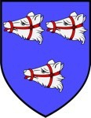

751140 Sir Knight William Forbes 1st of Pitsligo & Kynnaldy
Riddare. Blev ca 53 år.

Född:
omkring 1392 Druminnor, Aberdeenshire, Scotland. [1]
Död:
1445-01-24 Arbroath, Angus, Scotland. [1]
Barn:
Personhistoria
1392?
Födelse omkring 1392 Druminnor, Aberdeenshire, Scotland
[1]
1445
Död 1445-01-24 Arbroath, Angus, Scotland
[1]
Källor